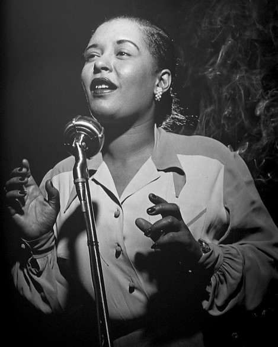
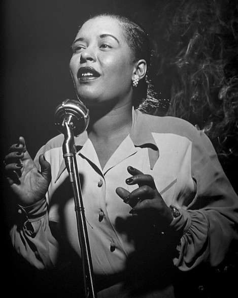

The Billie Holiday Symposium at Hunter College
Roosevelt House
February 8, 2024
Billie Holiday and the Legacy of “Strange Fruit”
11:30 AM to 1 PM

Michael Meeropol
An economist, educator, and author. The biological son of Julius and Ethel Rosenberg, he and his brother, Robert, were adopted by Abel Meeropol, the composer of “Strange Fruit.” Over the years, Meeropol has written and lectured extensively about the importance of the song as an anthem for social reform.
David Margolick
A veteran journalist and frequent contributor to Vanity Fair, The New York Times Book Review, and The New York Review of Books, has published nine books, including a forthcoming biography of Sid Caesar. He is the author of Strange Fruit: The Biography of a Song, which chronicles the history and cultural relevance of the song.
Margo Jefferson
The author of two memoires, Constructing a Nervous System and Negroland, which won the National Book Critics Circle Award for Autobiography, and On Michael Jackson. Her nonfiction has appeared in Newsweek, Vogue, New York, The Nation, and The New York Times, where she won the Pulitzer Prize for Criticism for her book reviews and cultural criticism. She teaches writing at Columbia University.
Billie Holiday: The Person
2:30 to 4:30 PM

Ricky Riccardi
The Director of Research Collections for the Louis Armstrong House Museum. He is the author of What a Wonderful World: The Magic of Louis Armstrong’s Later Years (Pantheon) and Heart Full of Rhythm: The Big Band Years of Louis Armstrong (Oxford). He won a Grammy Award for Best Liner Notes for The Complete Louis Armstrong Columbia and RCA Victor Studio Sessions 1946-1966. His talk is entitled “Louis and Billie.”
Mala Waldron
A singer-songwriter whose albums include Deep Resonance; Always There; Lullaby, her solo debut and tribute to her godmother, Billie Holiday; and He’s My Father. The latter was recorded with her father, Mal Waldron, the accomplished pianist and composer (“Soul Eyes”) who served as Billie Holiday’s accompanist for the last two years of her life. Waldon has performed at the Blue Note, the Jazz Standard, BAM, and Kennedy Center.
Lorraine Feather
The goddaughter of Billie Holiday, is a three-time Grammy-nominated lyricist and singer who has released 13 albums, among them Ages and Café Society. Her work in film and television, for which she has earned seven Emmy Award nominations, includes lyrical contributions to Babes in Toyland, All Dogs Go to Heaven, and Rules Don’t Apply, Warren Beatty’s last film for which she co-wrote the title track with Eddie Arkin. Her father, Leonard Feather, the jazz writer and presenter, who was one of Billie Holiday’s closest friends.
Dan Morgenstern
Among jazz’s most esteemed writers. A long-time editor of Down Beat, he is the author of Jazz People and Living with Jazz. He has won eight Grammy Awards for Best Liner Notes. He is Director Emeritus of the Institute of Jazz Studies at Rutgers University. His coverage of Billie Holiday led to a friendship with her.
Sonny Rollins
(in an interview recorded exclusively for the symposium) Is one of the legendary tenor saxophonists in jazz history. Among his essential albums are Saxophone Colossus, Way Out West, The Sound of Sonny Rollins, The Bridge, Freedom Suite, and This is What I Do. His honors include three Grammys and a Grammy Lifetime Achievement Award. He was a Kennedy Center Honors recipient under President Obama. He appeared on shows with Billie Holiday during the final year of her life when they became friends.
Billie Holiday: The Music
6 to 7:30 PM
Featuring Musical Performances By
Yolande Bavan
The Sri Lankan singer and actress, famously replaced Annie Ross when she left Lambert Hendricks & Ross, jazz’s most successful trio, and the group played for three years as Lambert Hendricks & Bavan. Her film acting credits include Parting Glances, One True Thing, Cosmopolitan, and The Brave One. Billie Holiday was her friend and mentor.
Maya Days
Starred on Broadway in Rent, Jesus Christ Superstar and Aida. In Rent, she also appeared in Los Angeles and on the West End in London. Additional theatre credits include Once Around the Sun and No Strings. As a solo artist, she has performed at Sundance, Feinstein’s, Ministry of Sound (London), 54 Below, Lincoln Center, and Carnegie Hall.
Madeleine Peyroux
Got her start busking on the streets of Paris, is one of the most popular jazz singer-songwriters performing today. Her albums include the bestselling Dreamland, the gold record Careless Love, The Blue Room, Secular Hymns, and Anthem. Her version of Serge Gainsbourg’s “La Javanaise” appeared in the Academy Award-winning The Shape of Water. She tours extensively, both nationally and internationally. Peyroux counts among her influences Billie Holiday.
Lorraine Feather
(see above bio)
Mala Waldron
(see above bio)
The students on our committee are:
Chynna SlaughterDiana Lopez
Emma Tramontana
Hannah Busch
Julie Rosenberg
Kristina Xhangolli
Michael Dmitrenko
Mykaya Borden
Nadia Martinez
Neil Sawhney
Olivia Tymon
Peri Micheva
Sara Mahraoui
Stevie Dattomo
Bitter Crop: The Hearthache and Triumph of Billie Holiday's Last Year, a new book by Paul Alexander, is being released on February 8th and will be sold at the event.
Advance Praise:
“Making it as real as if you had been there, Paul Alexander has done an incomparable job bringing to life both elements of his title. He shows us the malice and ignorance of Billie’s accusers and eventual killers, the love and support of friends, and her own courage and purity of heart. A must read for all lovers of the immortal Lady Day.”
—Dan Morgenstern, Director Emeritus, Institute of Jazz Studies, Rutgers University
“The unfinished life of Billie Holiday haunts us. In Bitter Crop, Paul Alexander tells her story in a way that could put her soul and our questions to rest.”
—Gloria Steinem, award-winning author and political activist
“Perhaps only in this century can we fully change the narrative of Billie Holiday. Billie was a trespasser of taboos, a woman of tenderness and terror, whose story is repeated again and again by working-class women of color. This is a heartfelt ballad of a book written as only one artist could view another, with insight and sincere compassion.”
—Sandra Cisneros, best-selling author of Woman Without Shame
LOCATION
Roosevelt House Public Policy Institute
47-49 E 65th St, New York, NY 10065
Registration will be through the Roosevelt House website
Contact Us
Click below to let us know if you have any questions: